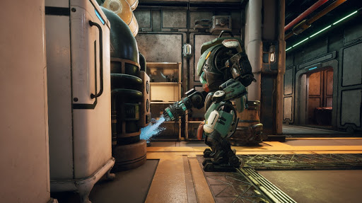
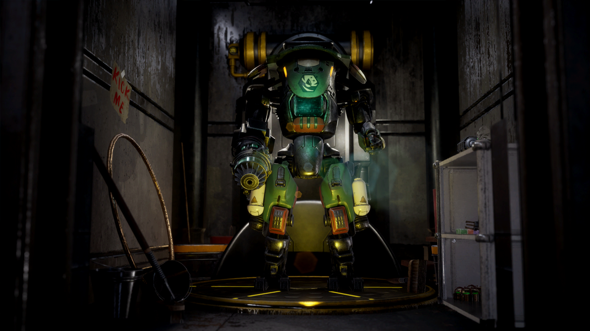

*sigh*
SAM, a Sanitation and Maintenance Automechanical, est un sympathique robot de conciergerie que vous trouverez déjà à bord du The Unreliable, près des couchettes au dernier étage. Interagir avec l’automécanique en sommeil vous mènera dans la quête intitulée La machine à nettoyer, dans laquelle vous devez trouver un objet spécial pour qu: SAM puisse de nouveau fonctionner.
Décontaminez : SAM saute dans les airs et s’écrase près de sa cible, répandant des fluides de nettoyage caustiques tout autour pour éliminer les taches très tenaces.
L'ancien capitaine du The Unreliable, Alex Hawthorne, a trouvé SAM à Emerald Vale pendant un travail et l'a pris à bord du navire avec l'intention de le modifier. Les journaux sur le terminal de Hawthorne montrent, qu'avant sa mort, SAM allait être équipé d'un Acid Steeper afin de le préparer au combat, mais la pièce a été perdue en transit et envoyée dans une ancienne installation de stockage à Roseway.
*sigh*